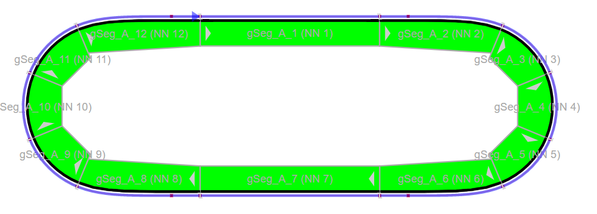

Overview
The track paper widget library provides a convenient wrapper to automatically build the SVG strings for an entire track system for the paper widget. The library utilizes the prebuilt SVG from the track system (post processed) in combination with acp trak status blocks to build a simple drop in widget to show the status of an acp trak system.


Major Components
The TrakPaper widget consists of a few components.
- TrakPaper Library
- TrakDiag Task
- SegmentStatus Custom Widget
- MpPaper widget
- ACOPOS Trak layout generated SVG
Each of these components works together to create the TrakMap widget and functionality.